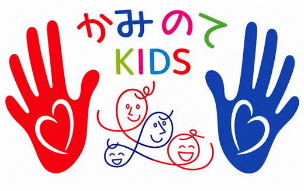
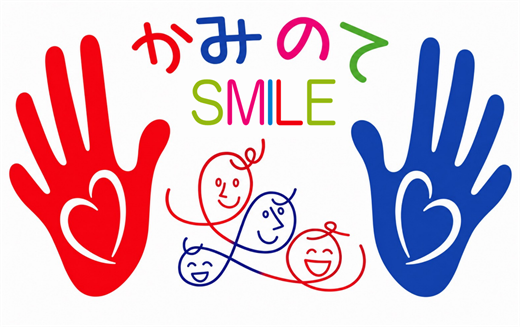

得意なことを、入口にする
好きなこと・得意なことを入口にして、そこから少しずつ広げます。
ことばがゆっくりで、まわりのお子さんとの差が気になる
気持ちの切り替えがむずかしく、集団に入りにくい
手先や体の使い方に不安がある
学校のあと、安心して過ごせる居場所がほしい
日本語が第一言語ではなく、どこに相談すればよいか分からない
診断はまだだが、家庭だけで抱えるのが不安になってきた
ひとつでも当てはまれば、まずはご相談ください。受給者証をお持ちでない段階でも大丈夫です。
好きなこと・得意なことを入口にして、そこから少しずつ広げます。
ほかの子に追いつくことを目標にはしません。いまできることの、ひとつ先を積み重ねます。
事業所の中だけで完結させず、ご家庭と学校、相談支援の方と同じねらいで関わります。
日本語＋4言語で対応できるスタッフが、制度の説明も日々の連絡も母語でお伝えします。
国が定める5つの領域すべてを見ながら、そのお子さまに必要なところを厚く支援します。
どちらも見学・体験を受け付けています。


かみのてには通訳スタッフがいて、制度の説明も日々の連絡も母語でお伝えできます。受給者証の申請や学校とのやりとりも、分かるところまでいっしょに進めます。
スタッフ対応言語日本語＋4言語
このサイトの表示言語：日本語・English・Português
どんな場所で、どんなふうに過ごすのか。見ていただくのがいちばん分かりやすいです。
受給者証をお持ちでなくても、診断がまだでも、ご相談だけでかまいません。